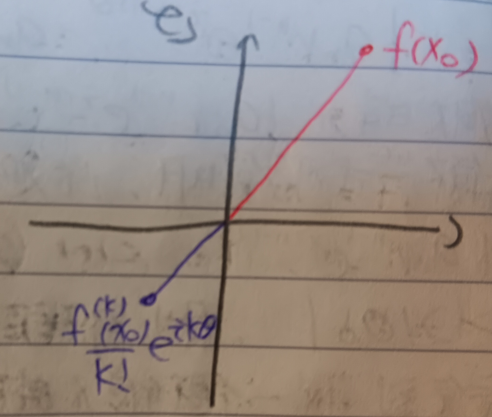

這份筆記是關於代數基本定理的證明。
複數多項式
定義 1：複數 (Complex Numbers)
給定\(a,b\in\mathbb{R}\)，令\(c=a+bi\)，其中\(i=\sqrt{-1}\)。我們稱這樣的\(c\)為複數。我們將所有複數構成的集合記為\(\mathbb{C}\)。
定義 2：複數的絕對值 (Absolute Value of Complex Numbers)
對於\(c=a+bi\in\mathbb{C}\)，其中\(a,b\in\mathbb{R}\)，我們定義\(c\)的絕對值為 \[ |c|=\sqrt{a^2+b^2} \]
註記 3
給定連續函數\(f:\mathbb{C}\to\mathbb{C}\)，則\(g(x)=|f(x)|:\mathbb{C}\to\mathbb{R}\)也是連續函數。
證明：給定任一點\(x\in\mathbb{C}\)並給定任意\(\epsilon>0\)，由\(f\)連續可知存在\(\delta>0\)使得對於所有滿足\(|y-x|<\delta\)的\(y\in\mathbb{C}\)都有\(|f(y)-f(x)|<\epsilon\)。然而由三角不等式有 \[ \epsilon>|f(y)-f(x)|\geq||f(y)|-|f(x)||=|g(y)-g(x)| \] 故可知\(g(x)=|f(x)|\)也是連續函數。QED
定義 4：多項式 (Polynomials)
考慮函數 \[ f(x)=a_0+a_1x+a_2x^2+a_3x^3+\cdots+a_nx^n \] 其中\(a_0,a_1,\cdots,a_n\in\mathbb{C}, a_n\neq 0\)，我們稱這樣的函數為\(\mathbb{C}\)上的多項式。我們記所有\(\mathbb{C}\)上多項式的集合為\(\mathbb{C}[x]\)。
定義 4-1：次數 (Degree)
我們稱定義4中的\(n\)為多項式\(f(x)\)的次數，並記\(\deg f=n\)。
代數基本定理
定理 5：代數基本定理 (Fundamental Theorem of Algebra)
給定\(f(x)\in\mathbb{C}[x]\)，若\(\deg f\geq 1\)，則至少存在一個\(x_0\in\mathbb{C}\)使得\(f(x_0)=0\)，即\(f(x)\)在\(\mathbb{C}\)中有至少一根。
證明：給定多項式 \[
f(x)=a_0+a_1x+a_2x^2+\cdots+a_nx^n
\] 假設對於所有\(x\in\mathbb{C}\)都有\(f(x)\neq 0\)。則由於多項式\(f(x)\)是連續函數，故由註記3知函數\(g(x)=|f(x)|\)也是連續函數。給定\(L>0\)，並令 \[
D_L=\{x\in\mathbb{C}:|x|\leq L\}
\] 這是一個緊緻集(它等價於\(\mathbb{R}^2\)上的有界閉集，見這裡的定理14)，故連續函數\(g(x)\)在其上應有極小值(見這裡的定理12)。
接著，考慮\(f(0)=a_0\)，由假設知\(a_0\neq 0\)，故\(g(0)=|a_0|>0\)。有 \[
\begin{aligned}
g(x)&=|a_nx^n+\cdots+a_1x+a_0|\\
&=|a_nx^n+\cdots+a_1x-(-a_0)|\\
&\geq\underbrace{|a_nx^n|+|a_1x+a_2x^2+\cdots+a_{n-1}x^{n-1}|}_{\mbox{(I)}}-|a_0|\mbox{
(三角不等式)}
\end{aligned}
\] 我們可以將\(x\)記為極座標表示\(x=re^{i\theta}\)，則\(|x|=r\)。於是由三角不等式有 \[
\begin{aligned}
\mbox{(I)}&=|a_nx^n|+|a_1x+a_2x^2+\cdots+a_{n-1}x^{n-1}|\\
&\geq |a_n|r^n+\sum_{k=1}^{n-1}|a_k|r^k\\
&=r^n\left(|a_n|-\sum_{k=1}^{n-1}|a_k|r^{k-n}\right)
\end{aligned}
\] 由於\(k-n\leq -1\)，故有
\[
\sum_{k=1}^{n-1}|a_k|r^{k-n}\leq r^{-1}\sum_{k=1}^{n-1}|a_k|
\] 也就是說，我們可以選定夠大的\(r>0\)使得 \[
\sum_{k=1}^{n-1}|a_k|r^{k-n}\leq\frac{|a_n|}{2}
\] 於是有 \[
g(x)\geq
r^n\left(|a_n|-\sum_{k=1}^{n-1}|a_k|r^{k-n}\right)\geq\frac{|a_n|}{2}r^n
\] 也就是說，當\(r\)夠大時，\(g(x)\)可以任意大。具體來說，對於\(M>0\)，總是存在\(\overline{M}>0\)使得當\(r>\overline{M}\)時有\(\mbox{(I)}>M\)。接著，我們可以令\(M>2|a_0|\)，則有 \[
g(x)\geq\mbox{(I)}-|a_0|>2|a_0|-|a_0|=|a_0|
\] 我們可以接著令\(L=\overline{M}\)。這樣當\(|x|\geq L\)時就會有 \[
g(x)=|f(x)|>|a_0|
\] 然而\(|x|=L\)時\(|g(x)|>|a_0|=g(0)\)，而\(0\)是\(D_L\)的內點，故\(g(x)\)在緊緻集\(D_L\)上的極小值點不應該在邊界上，而應該是內點。
假設對於某個\(D_L\)的內點\(x_0\)(即\(|x|<L\))有 \[
|g(x_0)|\leq g(x),\forall x\in D_L
\] 由假設知\(f(x_0)\neq
0\)，故\(g(x_0)=|f(x_0)|>0\)。考慮一個以\(x_0\)為中心但完全落在\(D_L\)中的小球，其半徑為\(\delta\)(見下圖1)。
考慮\(z=x_0+\delta e^{i\theta}\)，其中\(\theta\in[0,2\pi]\)。使用泰勒展開(見這裡的例6-1)會有 \[ \begin{aligned} f(z)&=f(x_0+\delta e^{i\theta})\\ &=f(x_0)+\left[\frac{f'(x_0)}{1!}(\delta e^{i\theta})+\frac{f''(x_0)}{2!}(\delta e^{i\theta})^2+\cdots+\frac{f^{(n)}}{n!}(\delta e^{i\theta})^n\right] \end{aligned} \] 令\(y=\delta e^{i\theta}\)，則 \[ f(z)=f(x_0)+\underbrace{\left[\frac{f'(x_0)}{1!}y+\frac{f''(x_0)}{2!}y^2+\cdots+\frac{f^{(n)}(x_0)}{n!}y^n\right]}_{\mbox{(II)}} \] 我們知道\(f^{(n)}(x_0)=n!a_n\neq 0\)，故\(\mbox{(II)}\)中應有非零項。令\(\frac{f^{(k)}(x_0)}{k!}y^k\)是\(\mbox{(II)}\)中的第一個非零項。並令 \[ h(y)=\frac{f^{(k)}(x_0)}{k!}y^k+\underbrace{\frac{f^{(k+1)}(x_0)}{(k+1)!}y^{k+1}+\cdots+\frac{f^{(n)}(x_0)}{n!}y^n}_{\mbox{(III)}} \] 類似上述說明\(\mbox{(I)}\)可以任意大的方法，我們知道當\(|y|=\delta\)很小時，\(\mbox{(III)}\)可以任意小。也就是對於\(\epsilon>0\)，存在\(\delta_0>0\)使得當\(|y|=\delta<\delta_0\)時，\(|\mbox{(III)}|<\epsilon\)。而 \[ \frac{f^{(k)}(x_0)}{k!}y^k=\delta^k\frac{f^{(k)}(x_0)}{k!}e^{ik\theta} \] 我們選擇\(\theta\)使得存在某個\(\lambda>0\)使得 \[ \frac{f^{(k)}(x_0)}{k!}e^{ik\theta}=-\lambda f(x_0) \] (見下圖2。)
於是當\(\delta<\delta_0\)時有 \[ |h(y)|\leq\delta^k(-\lambda|f(x_0)|)+\epsilon \] 於是有 \[ \begin{aligned} |f(z)|&=|f(x_0)+h(y)|\\ &\leq|f(x_0)|+|h(y)|\\ &\leq|(1-\delta^k\lambda)f(x_0)|+\epsilon \end{aligned} \] 選定夠小的\(\delta\)使得\(\delta^k\lambda<1\)，則會有\(|f(z)|<|f(x_0)|\)。這與\(x_0\)是\(g(x)=|f(x)|\)在\(D_L\)中的極小值點的假設矛盾，故\(f(x)\)應在\(\mathbb{C}\)中有根。QED
定義 5-1：代數封閉 (Algebraically Closed)
考慮體\(F\)。若所有\(F[x]\)中的多項式都在\(F\)中至少有一根，則稱\(F\)是代數封閉的。例如定理5中的\(\mathbb{C}\)就是代數封閉的。